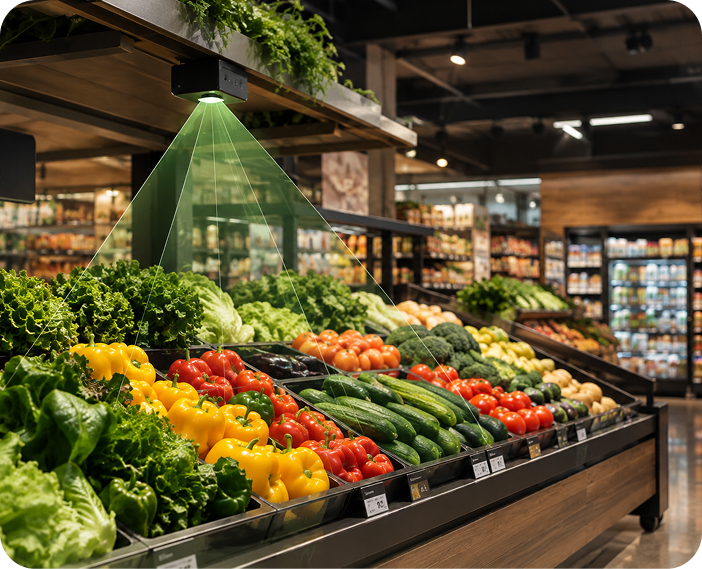
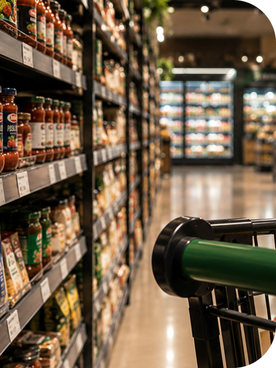

Mais inteligência para cada metro quadrado da sua loja.
Você sabe onde seus clientes estão?
Com nossos sensores inteligentes, é possível monitorar o fluxo e o interesse dos consumidores dentro da loja.
Fluxo de clientes
Saiba quantas pessoas circulam por cada área.
Tempo de permanência
Descubra onde os consumidores permanecem por mais tempo.
Mapa de interesse
Identifique quais produtos atraem mais atenção.
Do movimento aos dados.

Nosso sensor inteligente monitora o fluxo e o interesse dos consumidores dentro do supermercado, gerando dados que ajudam sua empresa a entender como os clientes percorrem a loja e quais produtos despertam maior atenção.
Como funciona?
Sensor
Captura o fluxo e o interesse dos clientes.
Dados
Informações são processadas e enviadas para a nuvem.
Dashboard
Visualize suas métricas e produtos mais visados.
Decisão
Torne decisões mais estratégicas para o seu negócio.
Sobre nós
Tecnologia para transformar o varejo através de dados
Desenvolvemos soluções capazes de transformar o comportamento observado dentro da loja em informações úteis para a tomada de decisões.
